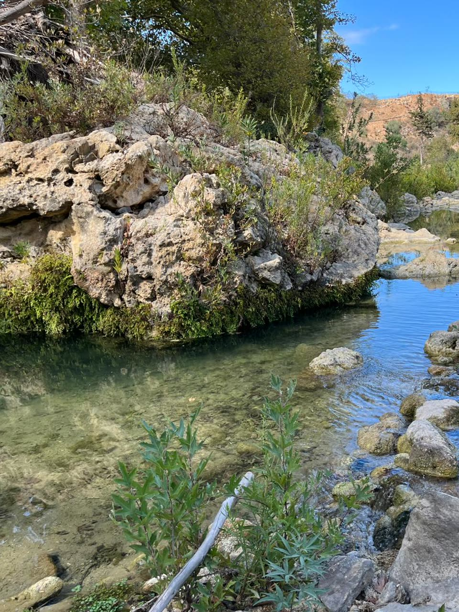
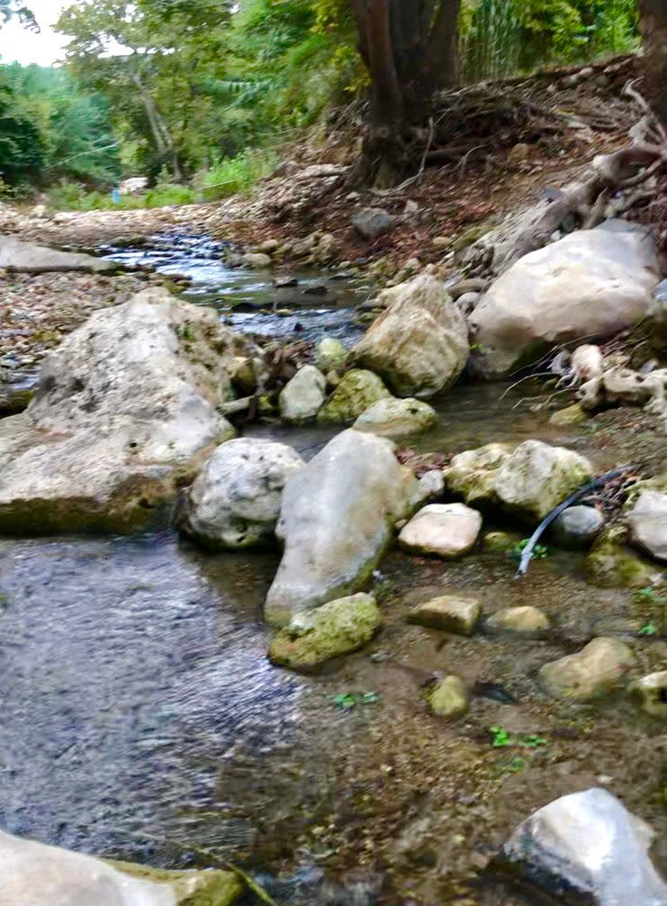
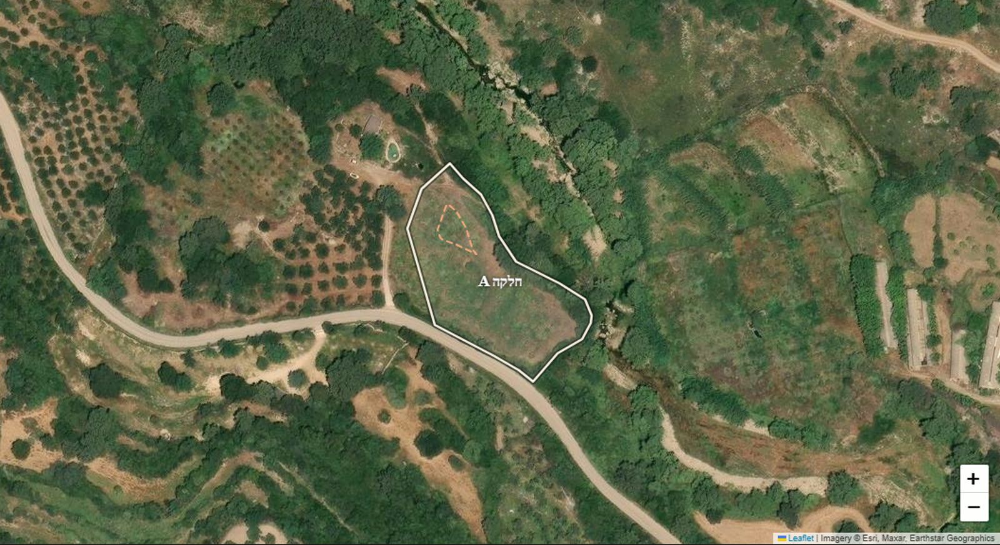
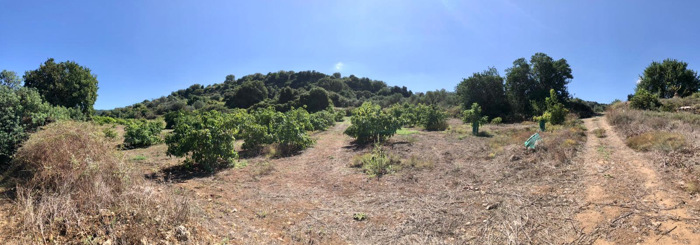
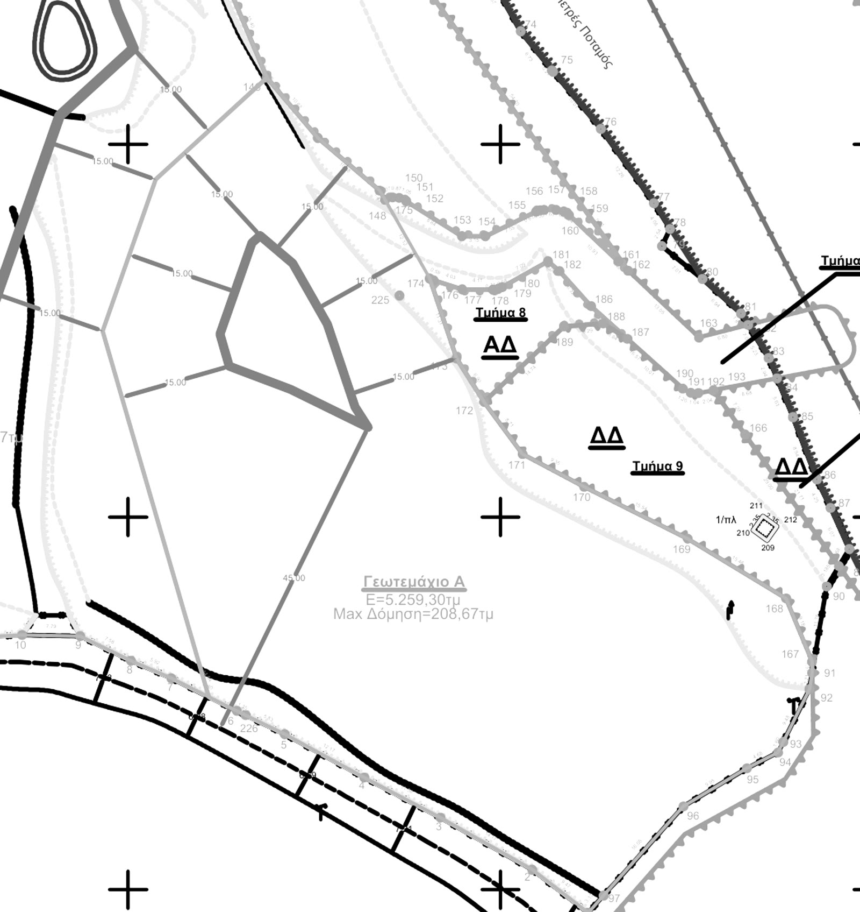
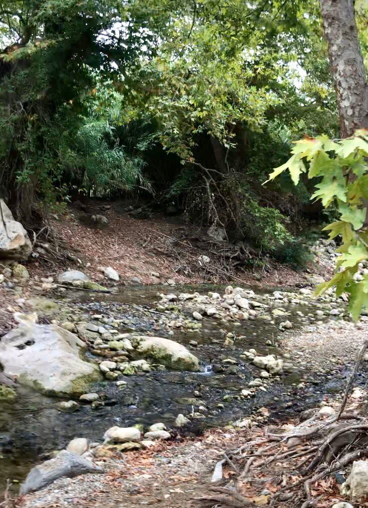

למכירה · כרתים, יוון · חלקה רשומה ועצמאית
חמישה דונם ורבע על גדת נהר פטרס, 11.5 ק״מ מרתימנו. מטע אבוקדו שעובד, חורש אלונים שיורד עד המים, וזכות בנייה שכבר הפכה לבקשה מסודרת: בית, סופיטה ובריכה.

ΡΕΜΑ ΠΕΤΡΕΣ · 0101
שבע בבוקר. כיסא בין שורות האבוקדו, קפה, אוויר קריר. מלמטה עולה קול קבוע של מים — הנהר ער. אחרי הקפה הולכים לאורך השורות, בלי סיבה למהר.
בצהריים יורדים אל הנהר עצמו, אל בריכה בין סלעים בהירים. נכנסים. קר. נשארים, עד שהאור נעשה נחושת וצל האלונים מתארך.
היום הזה עוד לא קרה. המקום שלו כבר רשום.

ΡΕΜΑ ΠΕΤΡΕΣ · 0202
חלקה Α (אלפא): חלקה אחת, רשומה כנכס נפרד בקדסטר (רשם המקרקעין היווני), בקצה המזרחי של נחלה שחולקה לחמש. גובלת בנהר פטרס בצדה הצפון־מזרחי, ומהדרך הלאומית הישנה יורדת אל המים.
את ארבע החלקות השכנות מחזיקות ארבע משפחות: שלוש ישראליות, ומשפחה יוונית מרתימנו. בלי שמות — שכנות טובה מתחילה בפרטיות.
ארבע משפחות כבר עשו בדיוק את זה, יחד, על אותה נחלה.

הקו הבהיר הוא גבול חלקה Α כפי שנרשם; המסגרת המקווקווית היא אזור הבנייה המסומן בתשריט, להמחשה. המרחקים בקו אווירי; זמני נסיעה טרם אומתו.
03
החלקה לא מחכה. כ־120 עצי אבוקדו גדלים בשורות, מושקים במים מהפטרס. מתחתיהם, קרוב לנחל, טרסה של הדרים וצבר. ובקצה התחתון — חורש אלונים צפוף, עם עצים גבוהים שנוגעים במים.
מוכרים אותה כשהיא עובדת: מים נכנסים, עצים גדלים. ביום הראשון פשוט מצטרפים.

04
זכות הבנייה כבר תורגמה לבקשה רשמית שמונחת אצל רשות התכנון. הבקשה היא לאישור תנאי בנייה: מסמך בכתב מהרשות שמתעד מה מותר לבנות כאן ובאיזה היקף.
״בית מגורים חדש בן קומה אחת, עם סופיטה ובריכת שחייה״
זה עדיין לא היתר בנייה, וחשוב לנו שזה ייאמר בבירור. זה השלב שקודם לו — והוא בדיוק המסמך שעונה על השאלה הראשונה של כל מי ששוקל קרקע ביוון: מה אפשר לבנות פה.
05
מקום קונים בעיניים, אבל מחזיקים אותו בניירות. מה שנמכר כאן הוא חלקה נפרדת ורשומה, לא חלק בבעלות משותפת. השרשרת המשפטית שלמה, וכל שלב בה נמצא במסמך שאפשר לקרוא.
תשריט טופוגרפי של הנחלה כולה, בידי מודד מוסמך.
חוזה רכישה סופי, חתום אצל נוטריון ברתימנו.
תשריט חלוקה סופי: חמש חלקות, לכל אחת שטח וזכות בנייה משלה.
החלוקה נרשמה. חלקה Α היא נכס עצמאי ורשום.
בהליך במערכת e‑adeies. לא היתר — עדיין.

06
קרקע ביוון נשמעת לישראלים כמו הרפתקה. כאן היא הייתה תהליך, ומהתהליך נשארו תיק שלם ושלושה אנשי מקצוע שמכירים את החלקה הזאת: עורך דין, מודד ומהנדס. שלושתם זמינים לקונה.
מי עונה: המשפחה שקנתה. ההורים, שהחלקה על שמם, והבן, שמנהל את המכירה.

03שיחה אחת איתנו — ואחר כך, אם תרצו, בוקר על החלקה.
הדף נכתב מטעם המשפחה שמוכרת את החלקה — משפחה ישראלית מקבוצת הרכישה. העובדות המשפטיות והתכנוניות נשענות על מסמכים; את השטח תיארנו כפי שצילמנו וראינו אותו. מה שעוד אינו ודאי, ובראשו בקשת הבנייה, כתוב כמו שהוא: בקשה בהליך, לא היתר. המרחקים נמדדו בקו אווירי, וכל המסמכים יועמדו לבדיקת עורך דין מטעם הקונה. כתבנו כמו שהיינו רוצים שיכתבו לנו.
35.3167°N · 24.3719°E · Kamanos, Agios Konstantinos, Rethymno, Crete